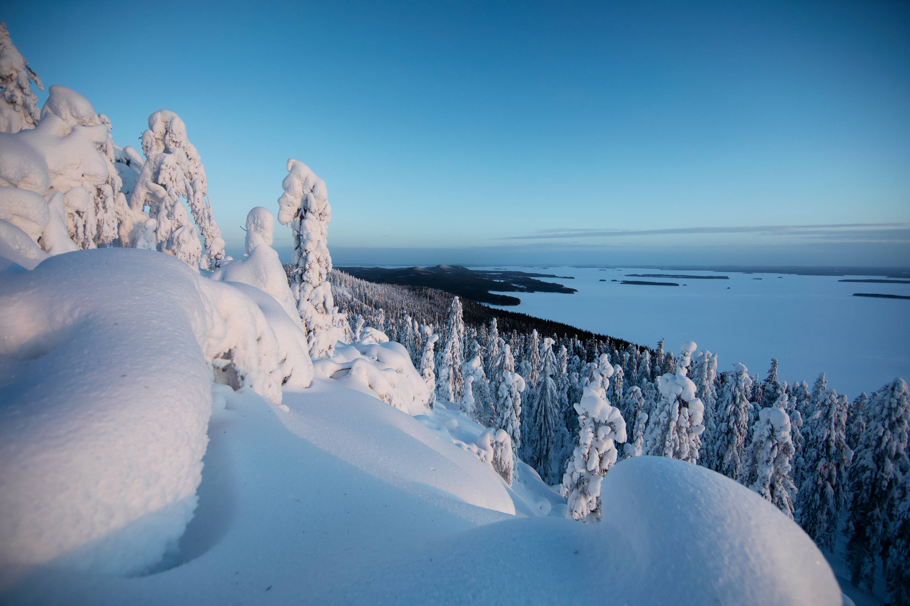

Ziemu var baudīt dažādos veidos - gan apmeklējot muzejus un baudot mākslu, gan izklaidējoties slēpošanas trasēs un esot dabā vai pastaigās pa Latvijas pilsētām.
Šīs ir dažas vietaas Latvijā, kur ziemā var labi pavadīt laiku.
